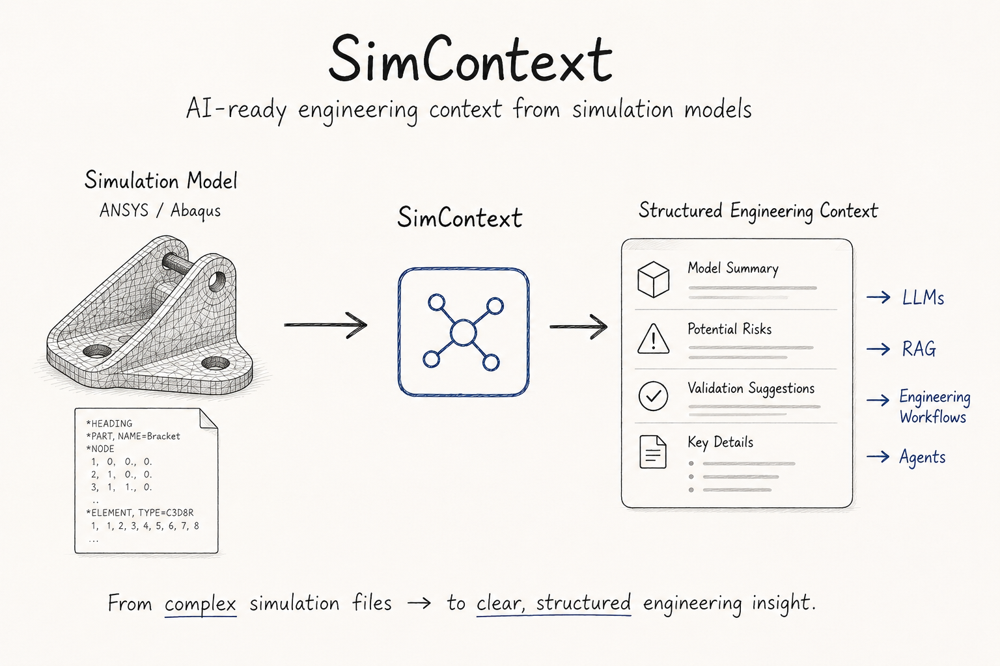

SimContext — AI-Ready Engineering Context from Simulation Models
SimContext is an engineering AI tool that transforms ANSYS and Abaqus simulation models into structured engineering knowledge and AI-ready context.
The system automatically parses FEM input files, extracts engineering metadata, identifies modelling risks, generates validation recommendations, and produces concise context summaries for LLMs, agents, and engineering RAG systems.
The project was motivated by a common engineering challenge: simulation models often contain valuable domain knowledge, but understanding an existing model can require manually reading thousands of lines of solver input.